मोबाइल से पुराना केवाला ऑनलाइन कैसे निकालें?
क्या आपका केवाला खो गया है? जानें खेसरा खाता नंबर और साल की मदद से, मोबाइल से केवाला की जानकारी निकालने का पूरा प्रोसेस...
पूरा पढ़ें (Read More)बिहार भूमि सर्वे 2026 और जमीन संबंधित सभी कानूनी जानकारी यहाँ पाएं
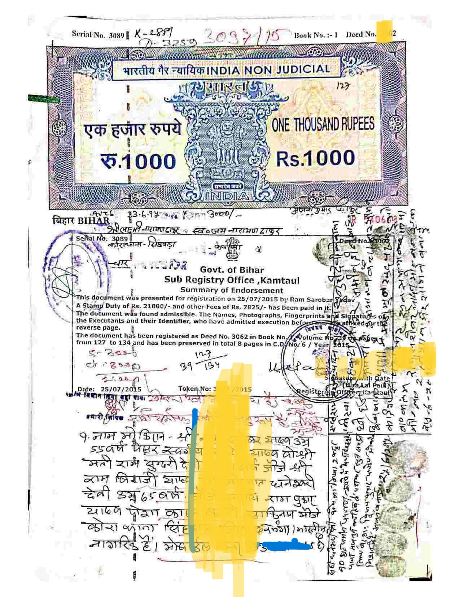
क्या आपका केवाला खो गया है? जानें खेसरा खाता नंबर और साल की मदद से, मोबाइल से केवाला की जानकारी निकालने का पूरा प्रोसेस...
पूरा पढ़ें (Read More)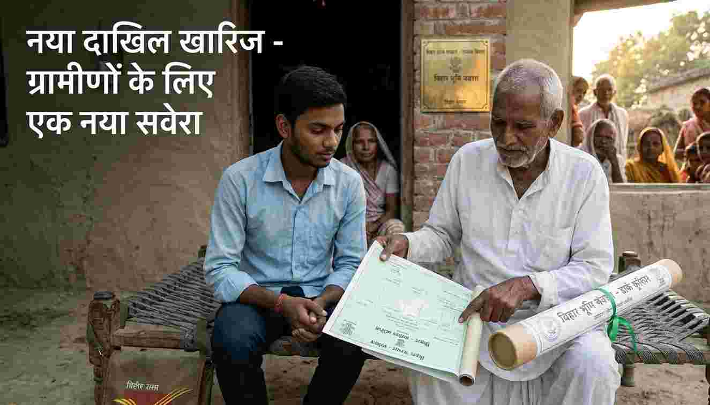
केवाला, बंटवारा नामा और पंचनामा के जरिए पुरानी जमीन को अपने नाम करने की पूरी प्रक्रिया स्टेप-बाय-स्टेप समझें...
विस्तार से पढ़ें...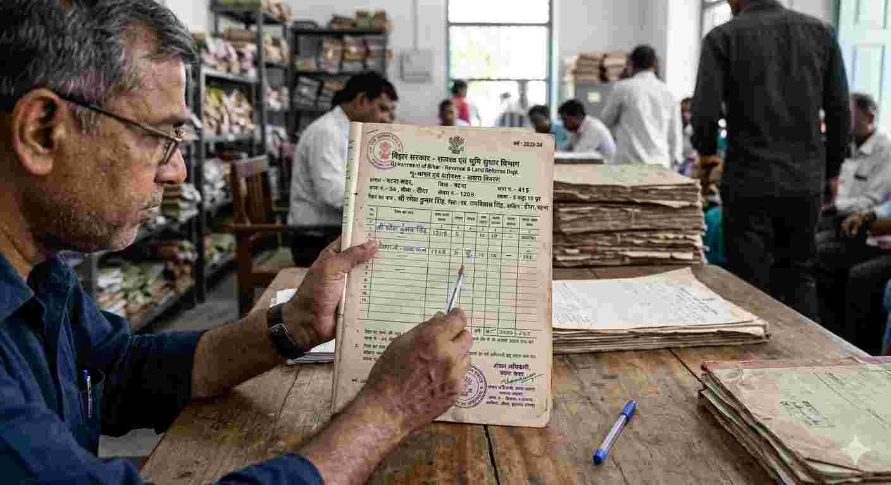
khatiyan original, बंटवारा नामा और पंचनामा बंटवारा, aur jamabandi nikalane ya mangvane ki tarika
विस्तार से पढ़ें...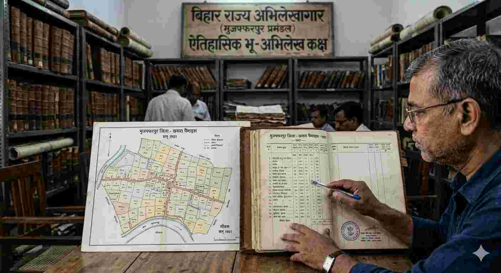
khatiyan original, बंटवारा नामा और पंचनामा बंटवारा, aur jamabandi nikalane ya mangvane ki tarika
विस्तार से पढ़ें...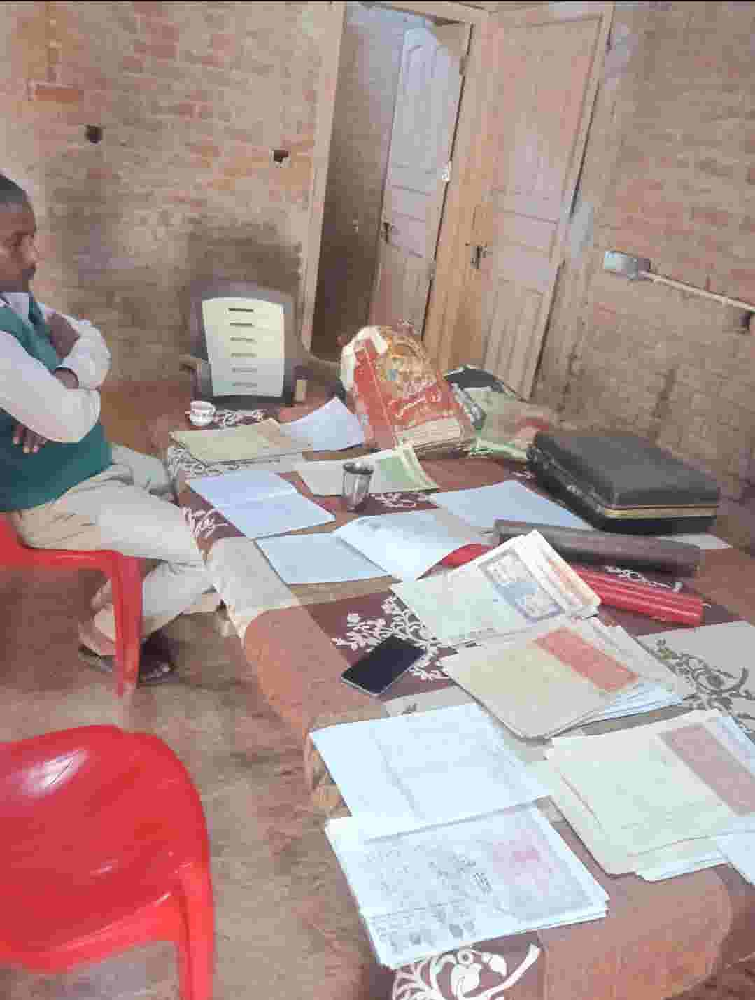
khatiyan original, बंटवारा नामा और पंचनामा बंटवारा, aur jamabandi nikalane ya mangvane ki tarika
विस्तार से पढ़ें...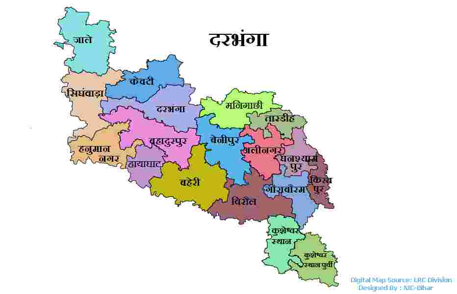
khatiyan original, बंटवारा नामा और पंचनामा बंटवारा, aur jamabandi nikalane ya mangvane ki tarika
विस्तार से पढ़ें...जानें कैसे आपसी सहमति से घर बैठे जमीन का बटवारा नामा तैयार करें और सर्वे में अपना अलग खतियान बनवाएं...
पूरा पढ़ें (Read More)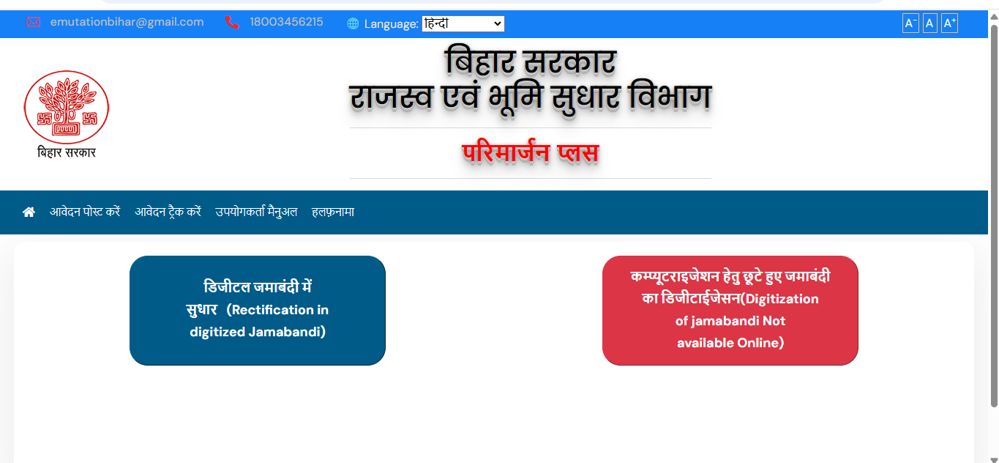
सिर्फ रजिस्ट्री काफी नहीं! जानें कैसे अपने नाम से रसीद कटवाएं और जमाबंदी कायम करें। बिहार सर्वे की जरूरी जानकारी...
पूरा पढ़ें (Read More)क्या आपकी जमाबंदी में नाम, खाता, खेसरा या रकबा गलत है? जानें बिहार सरकार के नए पोर्टल से सुधार का तरीका...
पूरा पढ़ें (Read More)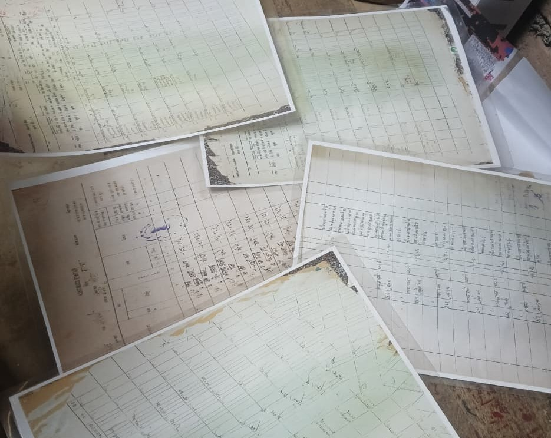
बिहार सर्वे 2026 के लिए खतियान सबसे जरूरी दस्तावेज है। जानें नया और पुराना खतियान आर्डर करने की पूरी प्रक्रिया...
पूरा पढ़ें (Read More)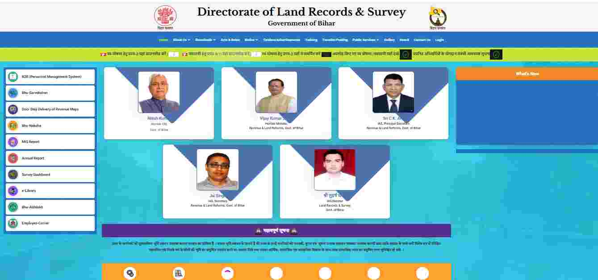
प्रपत्र-2 से लेकर प्रपत्र-18 तक का क्या काम है? अमीन और कानूनगो के कर्तव्य क्या हैं? जानिए पूरी जानकारी...
पूरा लेख पढ़ेंअब अमीन के चक्कर काटना बंद! जानें ई-मापी पोर्टल पर रजिस्ट्रेशन, फीस और डिजिटल नापी रिपोर्ट प्राप्त करने का तरीका...
पूरी प्रक्रिया पढ़ेंबैंक लोन (KCC) और सरकारी सब्सिडी के लिए LPC सबसे जरूरी है। जानें बिहार भूमि पोर्टल पर आवेदन का सही तरीका...
पूरा पढ़ें (Read More)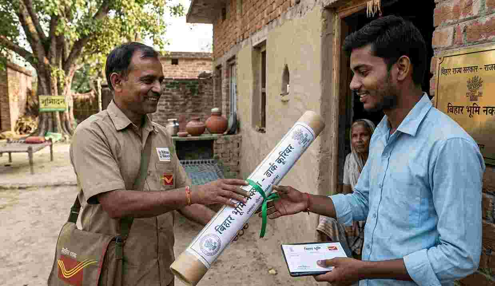
अब नक्शे के लिए गुलज़ारबाग जाने की ज़रूरत नहीं! घर बैठे इंडिया पोस्ट के जरिए डिजिटल नक्शा मंगाने का तरीका...
नक्शा ऑर्डर गाइड पढ़ें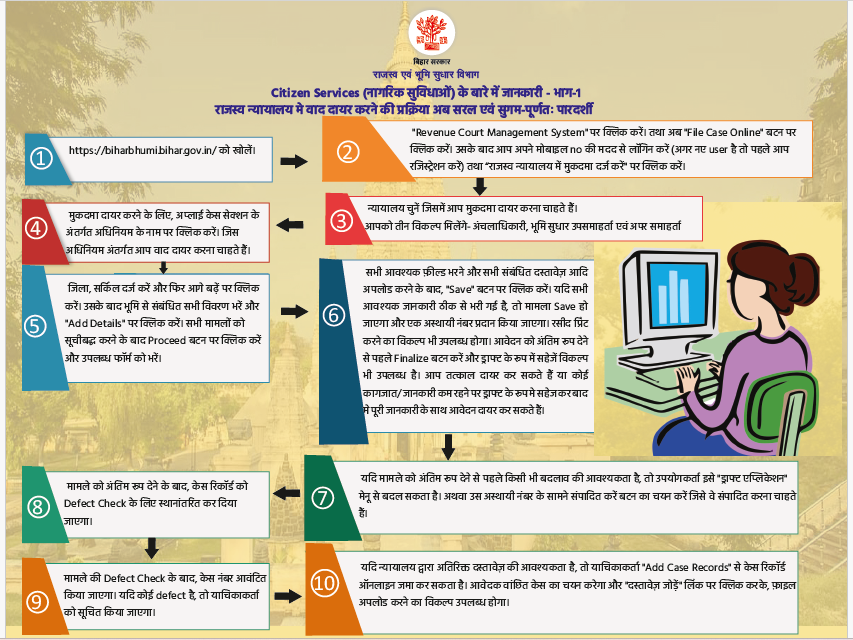
DCLR या ADM कोर्ट के चक्कर काटना बंद! जानें RCMS पोर्टल पर केस फाइल करने और ऑर्डर शीट डाउनलोड करने का तरीका...
केस गाइड पढ़ें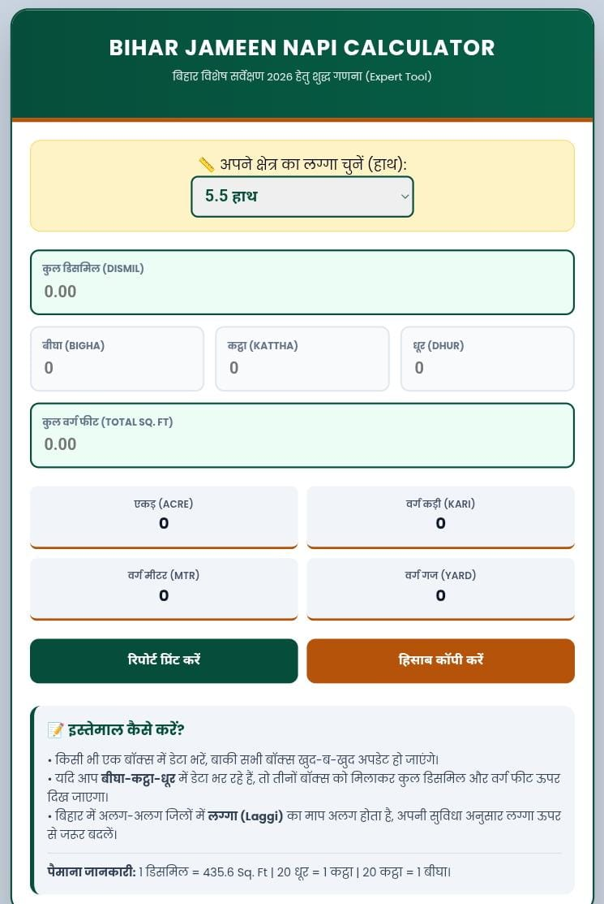
अब अमीन की जरूरत नहीं! खुद से निकालें जमीन का रकबा। जानें लग्गे के अनुसार जमीन नापने का पूरा गणित...
कैलकुलेटर गाइड पढ़ें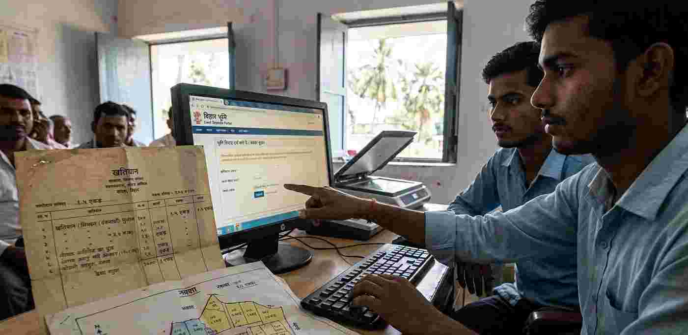
क्या आपके खतियान में जमीन ज्यादा है और नक्शे में कम? जानें एवरेज विधि का गणित और असली कारण...
पूरी जानकारी पढ़ें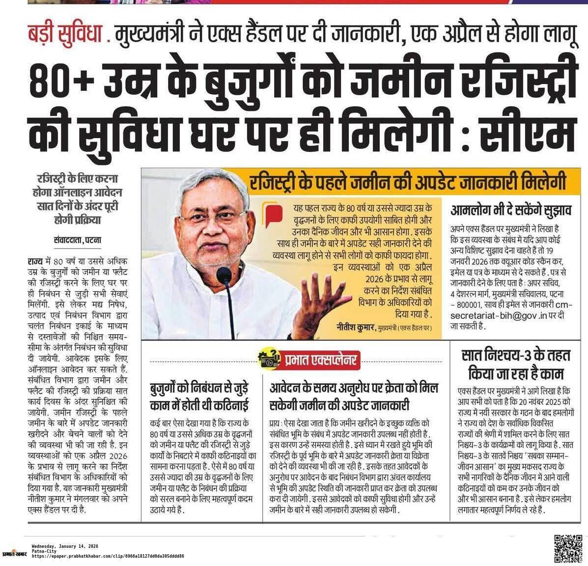
मुख्यमंत्री नीतीश कुमार का बड़ा फैसला! अब 80 साल से अधिक उम्र के बुजुर्गों को रजिस्ट्री ऑफिस जाने की जरूरत नहीं, घर पर ही होगा काम...
पूरा पढ़ें (Read More)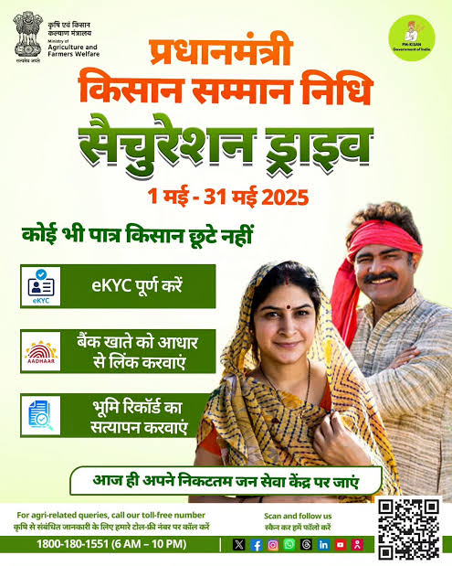
किसानों के लिए बड़ी खुशखबरी! 13 मार्च 2026 को जारी हो गया। अगर आपका e-KYC पूरा नहीं है तो तुरंत चेक करें अपना स्टेटस...
पूरा पढ़ें (Read More)अगर आपकी रसीद नहीं कट रही या रकबा जीरो दिख रहा है, तो परिमार्जन पोर्टल पर सुधार की पूरी प्रक्रिया जानें...
पूरा पढ़ें (Read More)